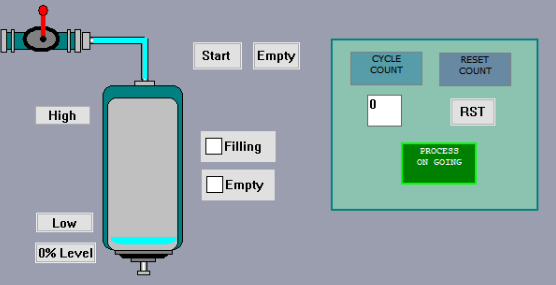

Line automation for beer bottling process.

Project Overview
This project was carried out for a process line automation for beer bottling. This work was made in response of the need of time and energy optimization for a startup company.
To do this, the software UNITY PRO (SCHNEIDER ELECTRIC) was u sed to implement the system. This is the common programming, debugging and operating software for Modicon M340, M580, Premium, Momentum and Quantum PLC ranges.
For this application specifically, a deployment of a code using GRAFCET standard was implemented for a Modicom TSX Premium PLC. It was aimed the idea of using a conveyors, electro-valves, sensors and other active elements as timers, logic controllers and HMI for graphic interface.
The graphic interface was run at first by sequential simulation fact that allow the detection of possibles errors during the go.
If you want to go deeper on this work, please check out the report on the button below.
Learn More